3. Classification: Supervised
Nearest neighbour, linear classifiers, Haar features, SVM, kernels, AdaBoost, sliding window detection
1. Supervised Classification
In supervised learning, every training example has both an input vector (image) and a target label. The algorithm learns a mapping from inputs to labels that generalizes to unseen examples.
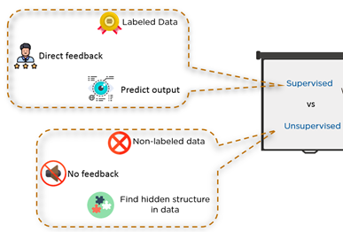
| Aspect | Supervised | Unsupervised |
|---|---|---|
| Training data | Inputs and labels | Inputs only |
| Feedback | Direct (knows correct answer) | None |
| Goal | Classify inputs into discrete categories | Find hidden groups (clustering) |
Data-Driven Approach Pipeline
- Collect a dataset of images and assign labels.
- Train a classifier using machine learning.
- Evaluate on a new, unseen set of images.
There is no hardcoded function that can classify images — visual concepts are too variable and complex to specify with simple rules. Machine learning is essential.
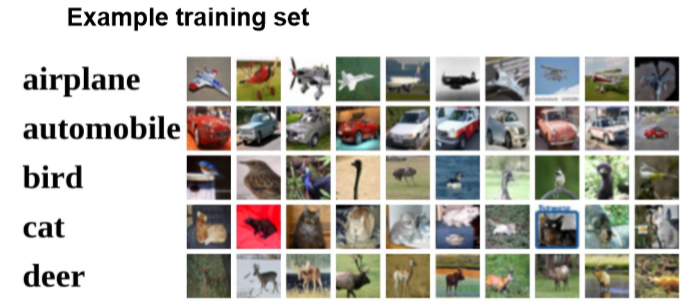
2. The Semantic Gap and Classification Challenges
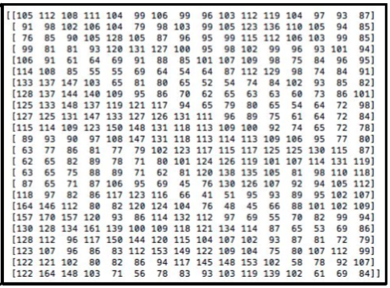
Why Pixel-Level Matching Fails
| Challenge | Effect on Pixels |
|---|---|
| Viewpoint variation | Camera angle/zoom changes all pixel values |
| Illumination | Lighting and shadows change all pixel values |
| Deformation | Object shape changes (e.g., cat stretching) |
| Occlusion | Objects may be partially hidden |
| Background clutter | Complex backgrounds interfere with object pixels |
| Intra-class variation | Same category can look very different (different cat breeds) |
3. Nearest Neighbour Classifier
The simplest possible classifier: memorize all training images, then classify a test image by finding the most similar training image.
| Phase | Operation | Cost |
|---|---|---|
| Training | Store all training images and labels | O(1) — no computation |
| Testing | Compare test image to every training image, return label of nearest | O(N × k) per query |
Distance Metrics
Sum of absolute pixel differences. No square root needed — computationally cheaper.
Standard straight-line distance in high-dimensional space.
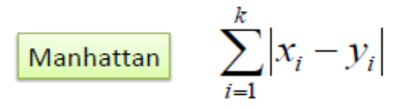
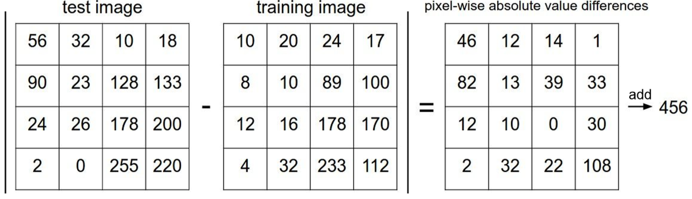
Decision Regions: Voronoi Diagram
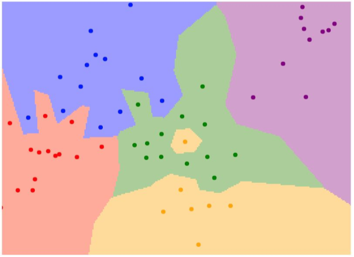
CIFAR-10 Results
CIFAR-10 has 10 classes, 50,000 training images, and 10,000 test images (32×32 color).
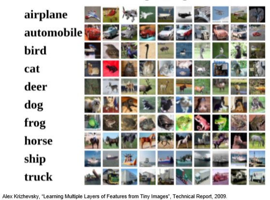
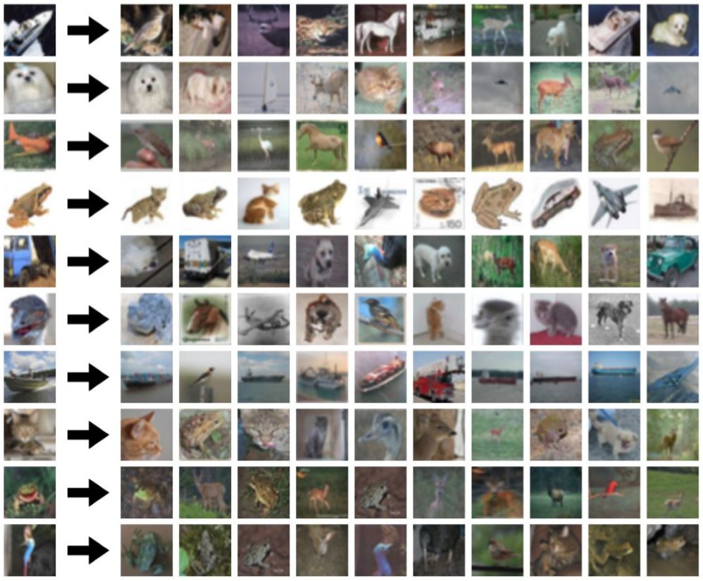
4. K-Nearest Neighbour (K-NN) Classifier
Instead of using the single nearest neighbor, find the K closest training points and use majority voting:
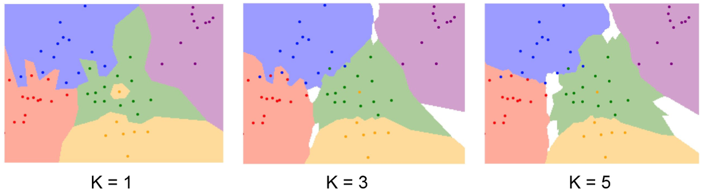
| K Value | Boundary | Bias | Variance |
|---|---|---|---|
| K = 1 | Jagged, complex | Low (fits training data) | High (overfits to noise) |
| K = 3 | Smoother | Medium | Medium |
| K = 5 | Smoothest, may have undecided regions | Higher | Lower (generalizes better) |
Strengths: Simple, no explicit training, non-parametric (no distribution assumptions), naturally multi-class.
Limitations: Low accuracy for pixel-based image comparison; O(N×k) test cost; high memory (stores all training data); distance metrics are uninformative for raw pixels.
Conclusion: Rarely used in practice for image classification, but introduces the key concepts of data-driven and distance-based classification.
5. Linear Classifiers
Instead of comparing images by distance, linear classifiers use a parametric model — a mathematical function with learnable parameters.
$\mathbf{x}$ = input vector ($n \times 1$); $\mathbf{W}$ = weight matrix ($C \times n$, where $C$ = number of classes); $\mathbf{b}$ = bias vector ($C \times 1$); output = $C$ class scores.
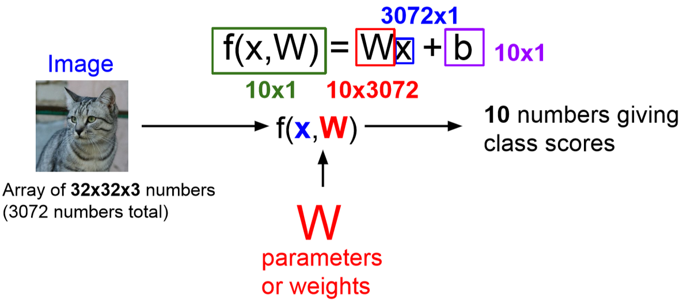
Multi-Class Example
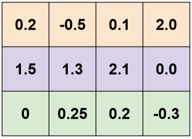
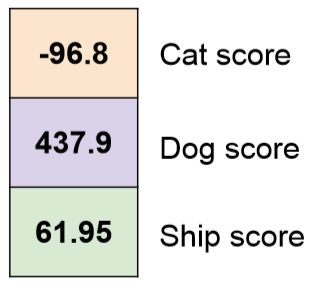
6. Haar-like Features
Raw pixel values change with viewpoint and lighting. Haar-like features encode local structural patterns (edges, lines, rectangles) that are more robust to such variations.
Types of Haar-like Features
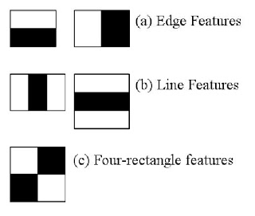
Computing Haar Features
- Assign weight +1 to white pixels in the mask, -1 to black pixels.
- Slide the mask over the image at every possible position.
- At each position, compute the weighted sum (white sum − black sum).
- If $|\text{white sum} - \text{black sum}| > \tau$ (threshold), a Haar feature is detected.
For the horizontal edge mask (top 2 rows = +1, bottom 2 rows = -1) applied to a 4x4 patch:
Image patch: Mask: 2 3 2 3 +1 +1 +1 +1 2 2 3 3 +1 +1 +1 +1 8 9 8 7 -1 -1 -1 -1 7 8 9 8 -1 -1 -1 -1 White sum = 2+3+2+3+2+2+3+3 = 20 Black sum = 8+9+8+7+7+8+9+8 = 64 Response = |20 - 64| = 44 > threshold (5) --> Feature DETECTED
This makes intuitive sense: there is a strong horizontal edge between rows 2 and 3.
Haar Features in a Linear Classifier
Each Haar feature type becomes one dimension of the feature vector. The linear classifier learns weights $W_{C,i}$ for each feature $x_i$ per class $C$:

| Strengths | Limitations |
|---|---|
| Computationally cheap | Weak classifiers individually |
| Available at any scale | Not invariant to rotation/scale |
| Good for binary tasks (face/no-face) | Too many features — costs in analysis |
| Simple and intuitive | Poor for multi-class problems |
7. Dataset Splitting for Machine Learning
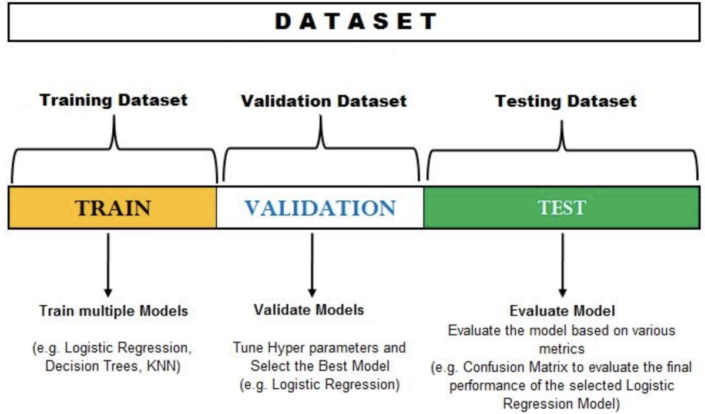
| Set | Purpose | When Used |
|---|---|---|
| Training | Fit model parameters (W, b) | During every training run |
| Validation | Tune hyperparameters (K, OO, kernel) | After each training run |
| Test | Final unbiased evaluation | Once, at the very end |
8. Support Vector Classifier (Linear)
The SVC finds the optimal separating hyperplane between two classes by maximizing the margin — the distance between the hyperplane and the nearest data points of each class.
1D Case: Hard vs Soft Margins
For binary classification on a 1D feature: a naive threshold at the midpoint between nearest opposite-class samples fits the training data perfectly (low bias) but may generalize poorly (high variance) because outliers can pull it off.
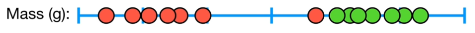
Fewer outliers omitted: lower bias (fits training data better), higher variance (sensitive to noise).
Hyperplane Mathematics
$\mathbf{w}$ = normal vector (perpendicular to hyperplane); $b$ = bias (offset from origin).
A point $\mathbf{x}_i$ is on the positive side if $\mathbf{w}^T\mathbf{x}_i - b > 0$, negative side if $< 0$.
Given: $\mathbf{w} = [-2, 1]$, $b = -6$.
- Point $\mathbf{x}_7 = (5, 1)$: $(-2)(5) + (1)(1) - (-6) = -10 + 1 + 6 = -3 < 0$ (negative side)
- Point $\mathbf{x}_2 = (1, 1)$: $(-2)(1) + (1)(1) - (-6) = -2 + 1 + 6 = 5 > 0$ (positive side)
If $y = +1$ should be on the positive side, $\mathbf{x}_2$ is correctly classified and $\mathbf{x}_7$ is not.
Multi-Dimensional SVC
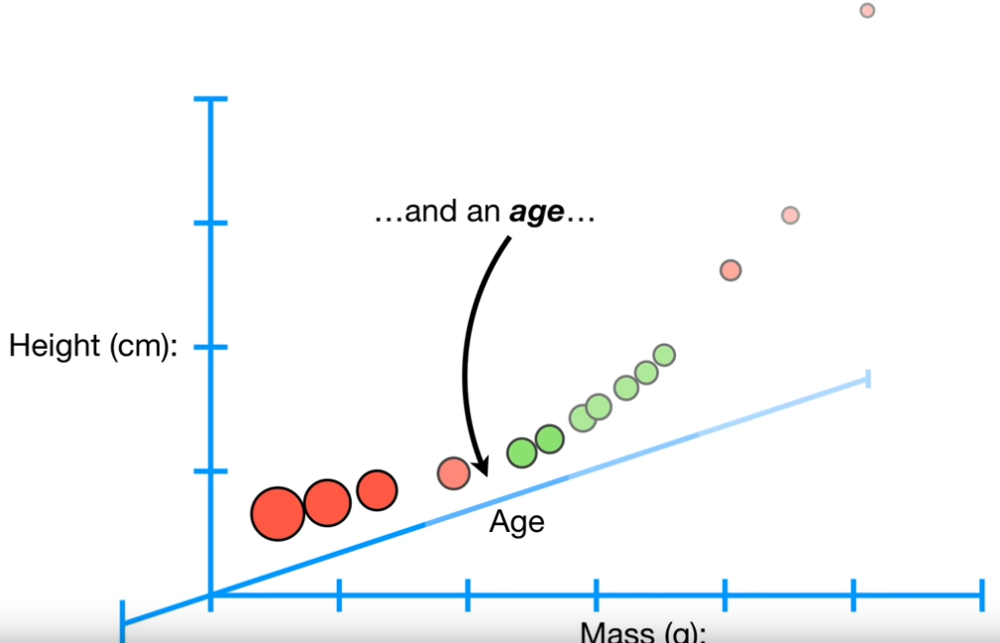
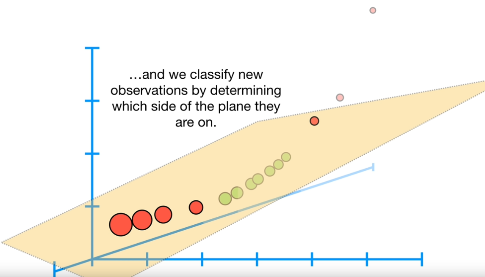
Multi-Class SVM
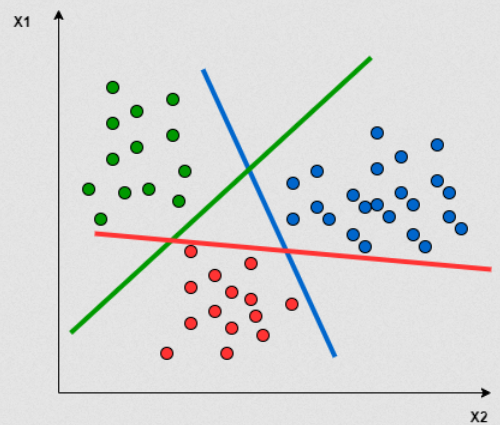
9. SVM — Non-Linear Kernels
Linear SVC fails when data is not linearly separable. The kernel trick maps data to a higher-dimensional space where linear separation is possible.
Kernel Types
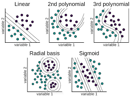
| Kernel | Mapping | Decision Boundary | Use When |
|---|---|---|---|
| Linear | No transformation | Flat hyperplane | Data is linearly separable |
| Polynomial | Polynomial feature space | Curved (degree $d$) | Polynomial relationships suspected |
| RBF / Gaussian | Infinite-dimensional space | Circular/elliptical regions | Most common non-linear choice |
| Sigmoid | Similar to neural network | S-shaped | Less commonly used |
Polynomial Kernel: 1D to 2D
Map each sample $x$ to $(x, x^2)$. Mid-range "cured" values (moderate $x^2$) separate from extreme "not cured" values.
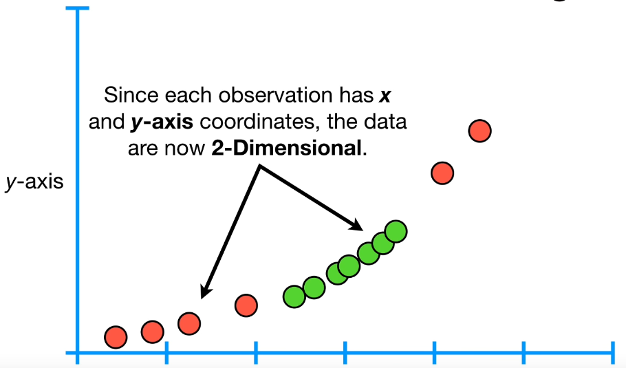
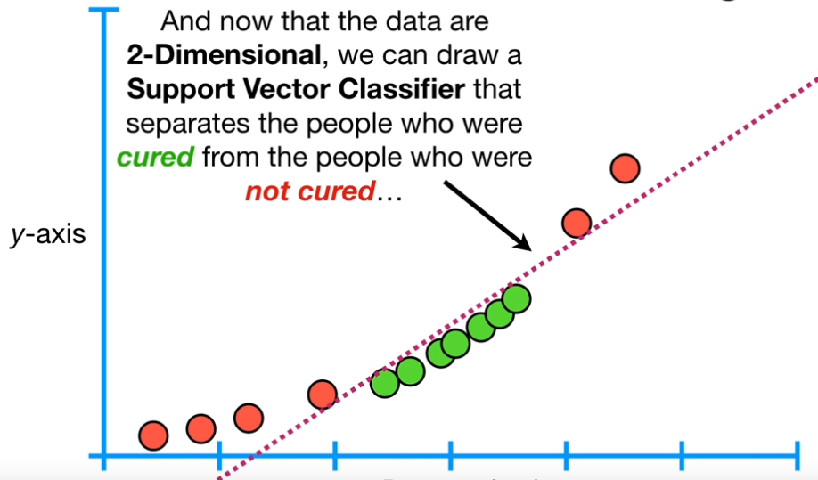
Polynomial Kernel: 2D to 3D
For circular boundaries in 2D: map $(x_1, x_2) \to (x_1^2, x_2^2, \sqrt{2}x_1x_2)$. In this 3D space, a flat hyperplane separates the classes. Projected back to 2D: circular boundary.
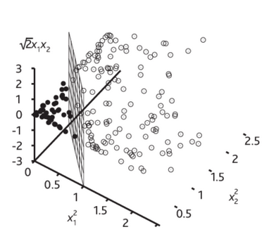
10. AdaBoost Classifier
Naive Haar classifiers use all 100,000+ features — too slow and most are individually weak. AdaBoost (Adaptive Boosting) selects only the most powerful features and combines them into a strong classifier.
Initialization
Assign equal weights to all training images (faces and non-faces):
$m$ = number of negative examples, $l$ = number of positive examples.
For Each of T Rounds
Step 1: Normalize weights to form a probability distribution: $w_{t,i} \leftarrow w_{t,i} / \sum_j w_{t,j}$
Step 2: Select best weak classifier. For each Haar feature $j$, compute weighted error:
$h_j(x_i) = 1$ if Haar feature $j$ is found in image $i$ (else 0). Select feature $h_t$ with minimum $\epsilon_t$.
Step 3: Update weights. Misclassified images get higher relative weights — the next round focuses on hard cases:
$e_i = 0$ if image $i$ is correctly classified (weight decreases by factor $\beta_t$); $e_i = 1$ if incorrectly classified (weight unchanged). After re-normalization, hard examples get higher relative weight.
Final Strong Classifier
where $\alpha_t = \log\!\left(\frac{1-\epsilon_t}{\epsilon_t}\right) = \log\!\left(\frac{1}{\beta_t}\right)$.
Features with lower error get higher weight $\alpha_t$. For a test image: extract only the $T$ selected features, compute weighted sum, compare to threshold.
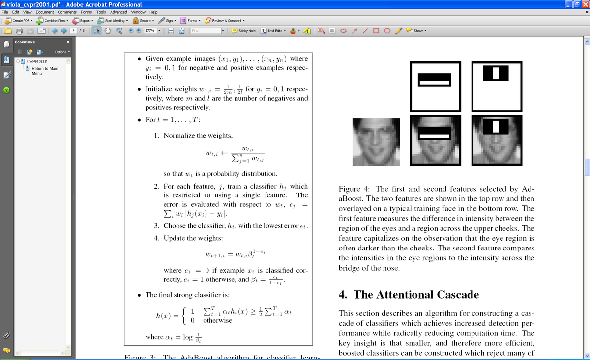
| Advantages | Disadvantages |
|---|---|
| Only uses powerful features | Needs many training examples |
| Training complexity linear in training set size | Sometimes outperformed by SVM (multi-class) |
| Extremely fast testing ($O(T)$, $T$ typically small) | Sensitive to noisy data (high-weighted outliers) |
| Flexible: any weak learner | Best for binary classification |
11. Object Detection (Sliding Window)
Image Pyramid
Objects can appear at any scale. An image pyramid handles this: create copies of the image at decreasing resolutions (1/2, 1/4, 1/8, ...). The fixed-size detector can then find objects of any size.
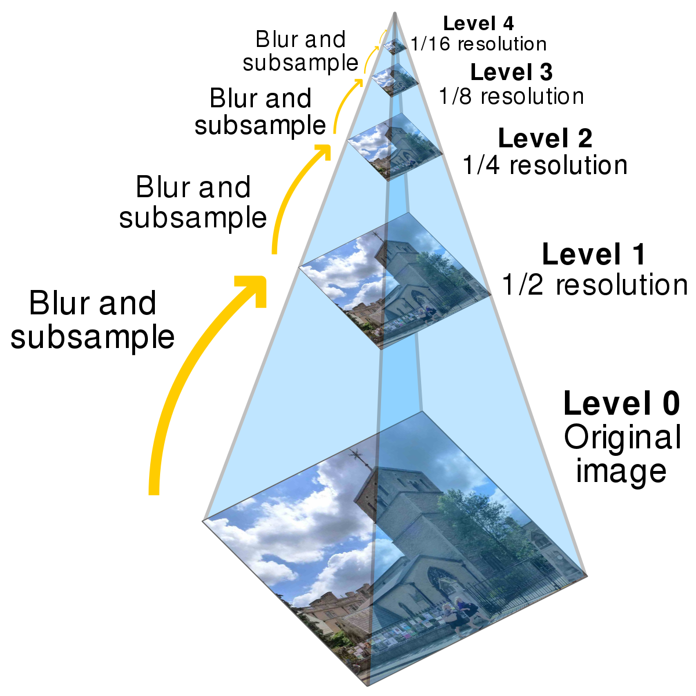
Cascaded Detection (Attentional Cascade)
Sliding a classifier over every position at every scale is slow. Key insight: most windows contain no object — reject them early.
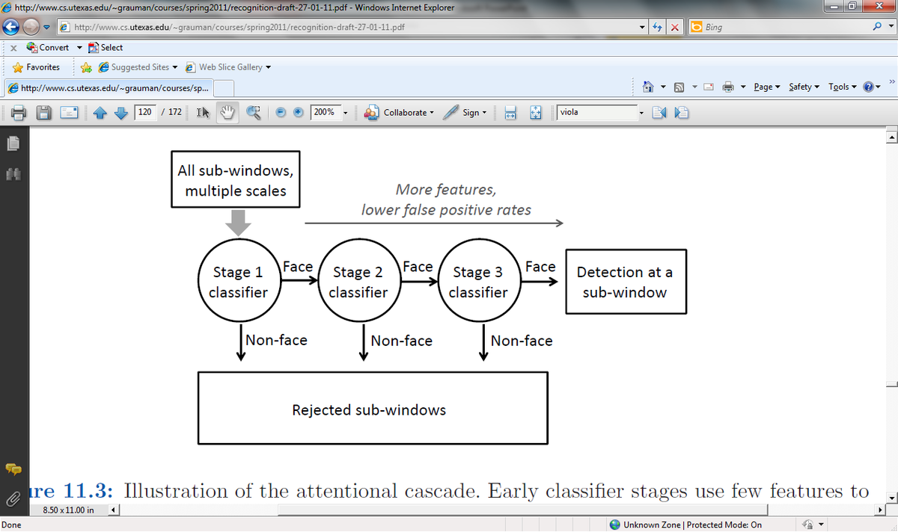
Classifier Comparison Summary
| Classifier | Train Cost | Test Cost | Accuracy | Key Idea |
|---|---|---|---|---|
| NN | O(1) | O(N×k) | Low | Memorize; nearest example |
| K-NN | O(1) | O(N×k) | Low-Med | Majority vote of K nearest |
| Linear (pixels) | Medium | O(C×n) | Low | Learn weights for each pixel |
| Linear (Haar) | Medium | O(C×n) | Medium | Learn weights for Haar features |
| SVC (linear) | Med-High | O(C×n) | Med-High | Maximize margin |
| SVM (kernel) | High | O(C×n) | High | Non-linear boundaries via kernels |
| AdaBoost | High | O(T) (very fast) | High (binary) | Select T best features, weighted vote |